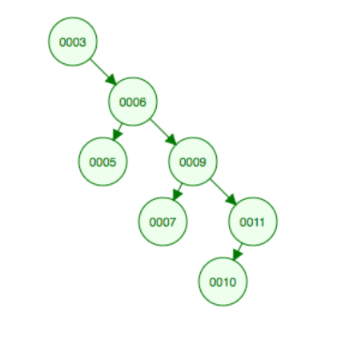

Let x be a node in a binary search tree. If y is a node in the left subtree of x, then y.key ≤ x.key. If y is a node in the right subtree of x, then y.key ≥ x.key.
 (Tree 1)
(Tree 1)
Inorder-Tree-Walk(x)
if x != NIL
Inorder-Tree-Walk(x.left)
print x.key
Inorder-Tree-Walk(x.right)
Compare with:
Postorder-Tree-Walk(x)
if x != NIL
Postorder-Tree-Walk(x.left)
Postorder-Tree-Walk(x.right)
print x.key
Why do we pass in a node rather than the tree itself?
Note why CLRS pseudo-code for max and min contains mistake
from practical point of view.
Library code versus application code.
Library must protect itself against both malicious and merely
inept users. So, need to check for NIL input!
Recursive versus loop: compare the two searches.
All searching functions (search, minimum, maximum, predecessor,
successor) run in O(h) time,
where h is the height of the tree.
We search by starting with the root node.
If it's key is equal to the key for
which we are searching, we are done: that is the
key we want.
On the other hand, if we have a NIL node at hand,
we are also done, but have failed to find the key.
Finally, if neither is true, we check the key
at hand against the key sought for.
Example:
Let's search for 4 in the tree above.
Worst case: Θ(n)
This occurs when the tree simply makes one long chain.
Average case: Θ(lg n)
That is because the expected height of a
randomly built binary search tree is O(lg n).
To find the minimum, we simply walk down the left side of the tree.
To find the maximum, we simply walk down
the right side of the tree.
Let's walk through successor for our tree above.
Imagine we are seeking the successor
of 3. The right tree of three is non-empty. So we simply
seek the minimum of that tree,
which is the leftmost node in the tree, in this case, 4.
On the other hand, take this tree, and start with node 10.
10 has no right child, so its successor must lie further up
the tree. But it is the right hand node of its
parent, so its parent can't be it. However, at the
next move back a generation we move left... and
that's the successor!
Let's walk through insert for tree 1 above.
We will insert 5. (When I say "Insert x," you should take that
to be shorthand for "Insert a node with key x.")
Deletion is by far the most complicated coding of any of these functions. There are four cases (z is the node to delete):
Let's walk through deleting 8 in the tree above.
The right half of tree 2 now looks like this:

We insert the keys randomly. (We would have to have all keys at
hand at the start, and then do a random shuffle on the set of
keys.) The expected height of such a tree is O(lg n).
This handles the situation where we believe we might get handed
input that is already sorted, which would create a worst-case
scenario.
In the console below, type or paste:
!git clone
https://gist.github.com/gcallah/f0d36f8c107e6c1e888d58aefcb3a5aa
cd f0d36f8c107e6c1e888d58aefcb3a5aa
from binary_search_trees import *